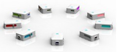

Noitom has developed a motion capture system based a set of small and light wireless world-class inertial sensors, the system is ideal for capturing the motion of human movements. The resulting clean, highly detailed motion capture data gives you valuable information about the relationship between the human subject and the test object.

Actor motion recording, replay, and format transferring to popular animation platforms such as Motionbuilder
Data output is in BVH format allowing easy integration into all industry standard softwares including MotionBuilder, Maya and 3D Studio Max.
mocap systems have been used in live performance animation. One operator can control a character’s body in real-time. Whether you require a simple one-person job, more sophisticated multi-actor work, or interaction with your audience, our systems will do the job efficiently and on budget.
Software drivers for Unity and UDK allow game developers to visualize straight into a game engine.
Considerable time and effort has been put into making Animazoo animations the smoothest, most natural animations available. Animazoo clients include award winning developers such as Ubisoft, Rockstar North, and Kuju Entertainment.
mySwing™ is a portable golf swing analyzer. It is a smart device attached to the golf club measuring the entire club swing motion. The swing data will wirelessly be transmitted to a smart phone or handle Pad to graphically display the swing motion data. When the club is swung, the sensor automatically picks up the motion data and forwards the data to a smart phone or a smart Pad (iOS or Android). The user can check his/her performance immediately after each swing or review the swing history anytime.
Inside the device is an inertial sensor module integrating a set of high precision MEMS sensor chips, such as gyroscope, accelerometer, and digital compass.
The inertial sensor module of mySwing™ is a specialized version of what is used in Noitom’s full body motion capture system.
mySwing™ is a sensor module, which communicates with iOS device (iPhone, iPad, iPod, and iPod touch).
The sensor module is linked to the iDevice through Bluetooth.
When the club is swung, the sensor automatically picks up the motion data and forwards the data to iDevice.
User can check his/her performance immediately after each swing or review the swing history anytime.
| Fast and accurate |
|
| Light and small |
|
| APP design |
|
| Data management and sharing |
|
| Ball flight |
|
| Long battery life |
|
| Reference card |
|
| Velcro strap |
|
| Nylon pouch |
|
| MFi certified |
|
Central Pro-Shop
Shop 106, 1/F, Hutchison House 10 Harcourt Road, Central, HK
Tel:(+852) 21406633
Golf Corner
1/F, Starlight House, 34 Leighton Road, Causeway Bay, HK
Tel: (+852) 28389238
Queensway Golf Shop
215-222, 2nd floor, Shun Tak Centre,168-200 Connaught Road Central, Hong Kong
Tel: (+852)28660306 www.qw.com.hk
Pura Golf
Suite 1A, Hillier Commercial Buliding, 65-67 Bonham Strand, Hong Kong
Tel: (+852)28152818 www.puragolf.com
Super Golf
Shop 1- 2, G/F, No.68 Yee Wo Street, Causeway Bay, Hong Kong
Tel: (+852) 28817318
Kings Golf
Shop 301, 3/F., Lee Garden Two, 28 Yun Ping Road, Causeway Bay, Hong Kong
Tel: (+852)25778861
Power Golf
279, Gloucester Road, Causeway Bay, Hong Kong
Tel: (+852)25746868
Golf Island
G/F, Han Hing Mansion, 40A Hankow Road, TST, Kowloon
Tel: (+852)23692998
Golf City
Flat A-D, 1/F Hankwong Mansion, 25-29 Hankow Road, TST, Kowloon
Tel: (+852)23120991
Professional Golf
Shop 15, Hong Kong Pacific Centre, 28 Hankow Road, TST, Kowloon
Tel: (+852)23118501
Metro Golf & Leisure
Shop 28-55 G/F, Houston Centre, 63 Mody Road, TST, Kowloon
Tel: (+852)27397713
Golf Performance Centre
Shop 12-13, G/F, Fortune Shopping Centre, 8 Hang Cheung Street, Cheung Sha Wan
Tel: (+852)28735168
www.hkgpc.com
Super Golf
Shop 1, 1/F., 26 Nathan Road, Tsim Sha Tsui, Kowloon
Tel: (+852)23687654
Super Golf
Super Golf G/F - 2/F., Ma's Mansion, No. 35-37 Hankow Road, Tsim Sha Tsui, Kowloon
Tel: (+852)27357654
Power Golf
Shop A2, G/F, Hon Kwong Mansion, Ichang Street, 25-29, Hankow Road,Tsim Sha Tsui.
Tel: (+852)28084558
Power Golf
1/F., Far East Mansion, 5 Middle Road, Tsim Sha Tsui, Kowloon
Tel: (+852)27395678
Hong Kong Golf Shop
Basement, Ma's Mansion, 35 Hankow Road, Tsim Sha Tsui, Kowloon
Tel: (+852)27352333
NTM-AHRS-800 is a small yet rugged 9DOF IMU provides serial digital outputs of 3D orientation as well as 3D acceleration, 3D angular rate (rotational), and 3D magnetic field data. Enhanced algorithms provide 3D real-time data corrected for cross-axis sensitivity.
| Output | Performance |
| Orientation | Eulerangle3*360°Quarternion |
| 3 Axis accl | Precision：0.05° |
| 3 Axis angular rate | Precision（Roll/Pitch）：<0.5° |
| 3 Axis emag | Precision（Heading）：<1° |
| Sensor specs | Gyro | Accl | eMag |
| Dimensions | 3 Axis | 3 Axis | 3 Axis |
| Range | ±1800 deg/s | ±2g/4g/8g | ±4000 mGauss |
| linearity | 0.2% | 0.25% | 0.2% |
| Bandwidth | 200 Hz | 200 Hz | 75 Hz |
| Interface | |
|
Max output rate (limited by output baud rate) |
Raw sensor data 800 Hz |
| Orientation data 480 Hz | |
| Output interface | RS232, TTL UART |
| Input power voltage | 3.3/5V |
| Current | 40 mA |